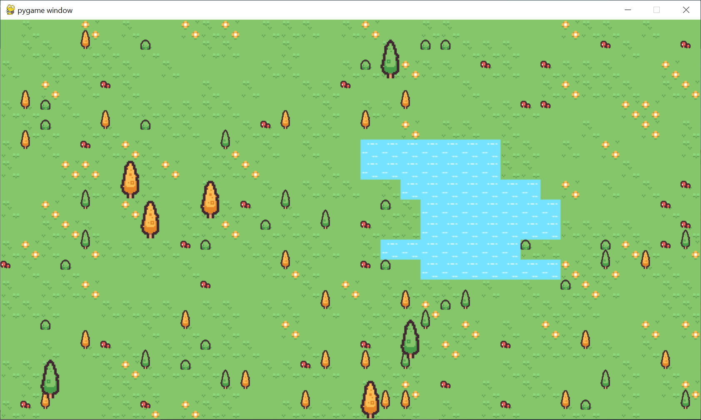
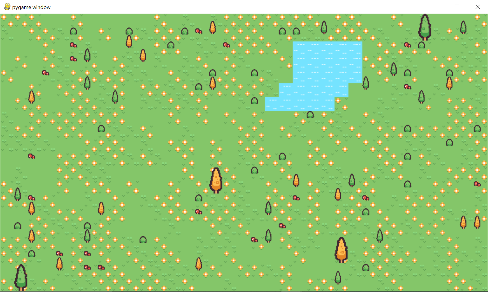
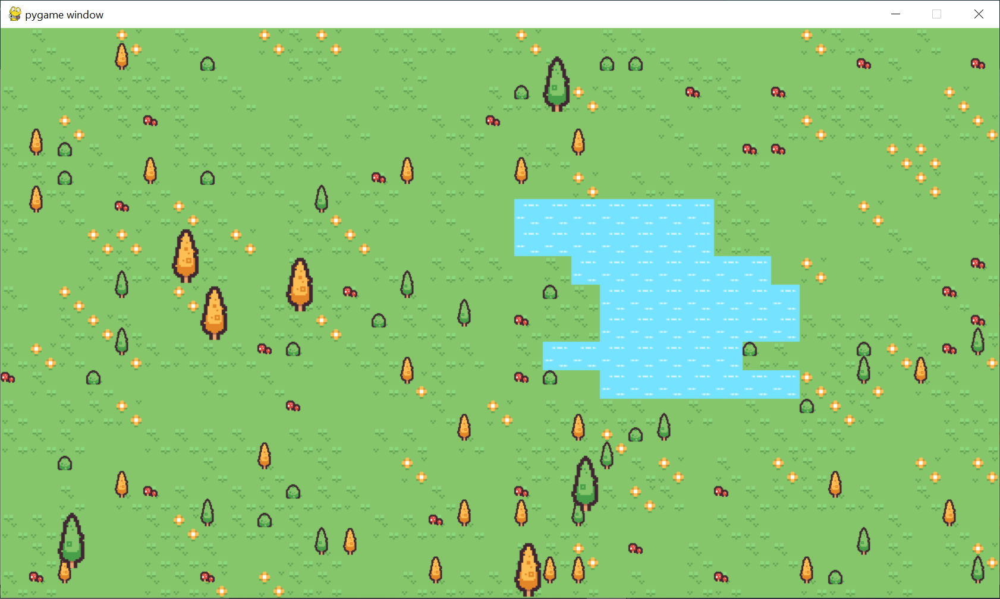
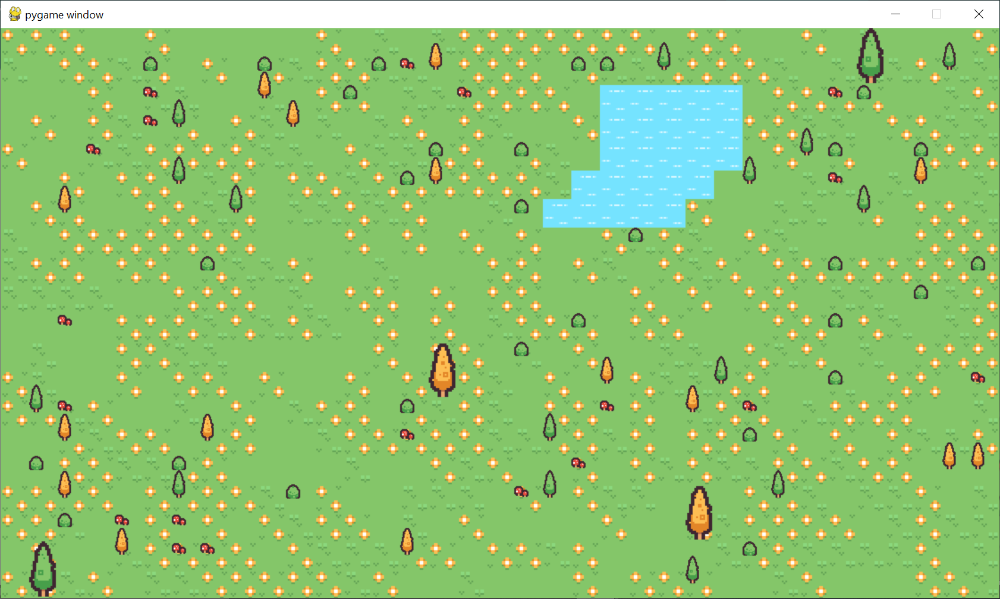

Procedural Generation
Retra's main function is its: Procedural Generation. Procedural Generation is creating a map for a video game based on semi-controllable random integers. These seeds are the 3 base Retra maps. Map: Itra, Terra and Luna. Each of them are generated via a seed using user input for: Floura, Lake size etc. Retra's main function is its: Procedural Generation. Procedural Generation is creating a map for a video game based on semi-controllable random integers. These seeds are the 3 base Retra maps. Map: Itra, Terra and Luna. Each of them are generated via a seed using user input for: Floura, Lake size etc.